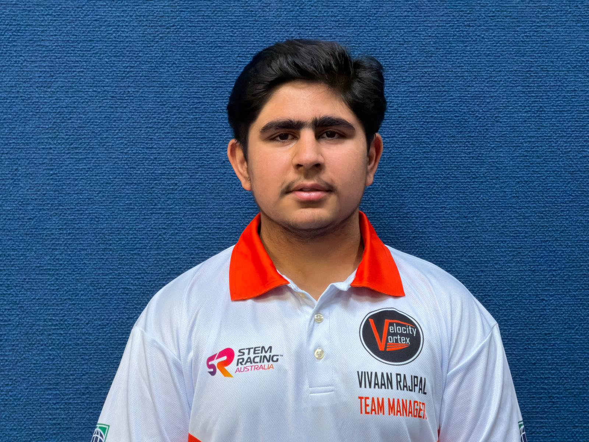
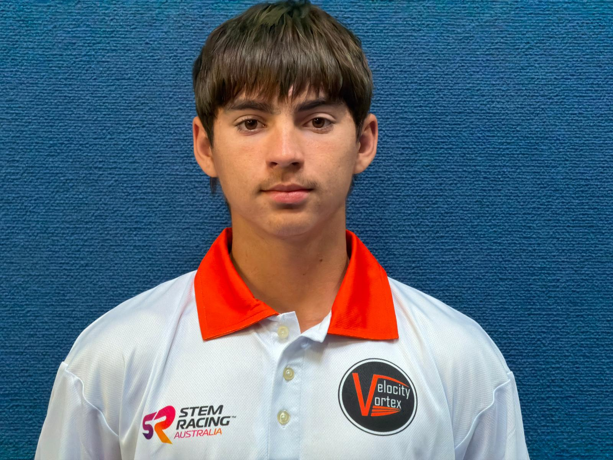
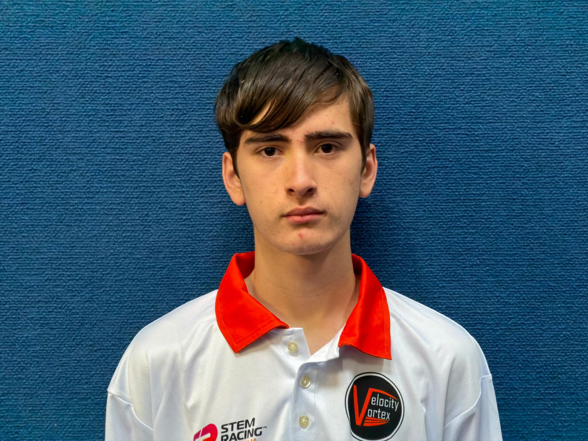
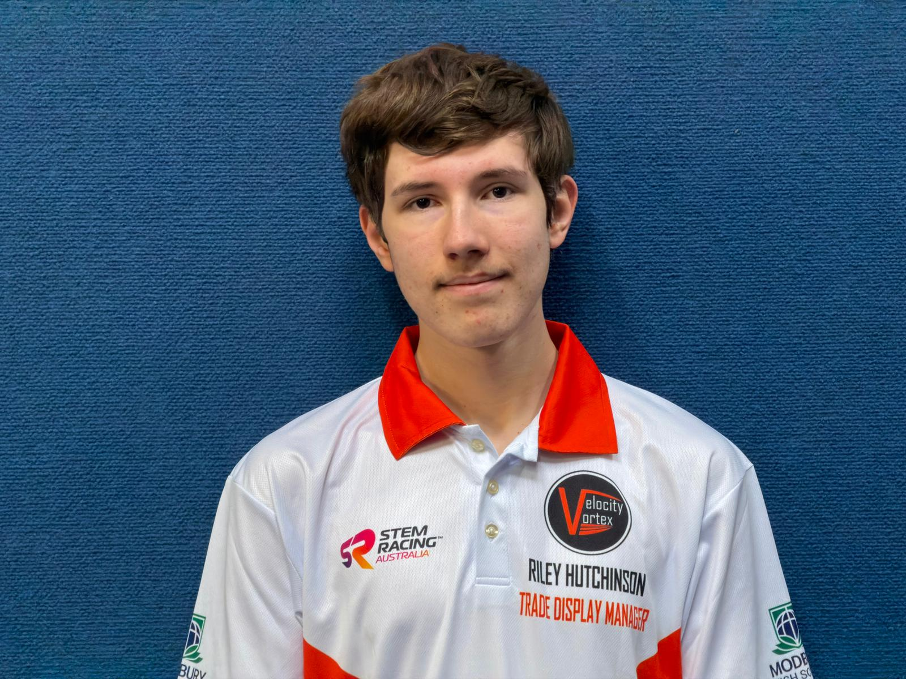

I am a year 11 student, working as the team leader and finance manager in our team. I am responsible for making sure everything stays on track and helping others in the team when needed, though I put most of my focus towards managing the finances and sponsorships. This also means I will be in close conversation with all the sponsors alongside our Trade Display Manager (Riley) who also has a background of sponsor management, ensuring you will have some of the best service and communication when sponsoring our team.

I'm Liam, I'm a Year 11 student, and the second Engineer. I'm responsible for testing the car and manufacturing the body and components of the car to ensure sure it fits the rules and regulations. I found my passion for STEM in schools upon selecting the subject as an elective for year 9 and later found it to be a very fun and involving subject, which led to me joining Velocity Vortex with other students in my class who also share an interest in STEM in schools.

I’m Sebastian, a Year 11 student who works as the Graphic Designer in our team. The reason I became Graphic Designer is because of my interest in art and technology, also because I have a background of using many graphics software apps such as Adobe Lightroom (Digital Photography Software) and Photoshop, mainly as of a result of doing Aviation photography as a hobby. My roles are to design the main visuals and branding designs for our team, Velocity Vortex, and of course helping out all the other members in the team when needed.

I'm Riley, I'm a Year 11 student and I'm the Trade Display Manager and the programmer and design of this website. I was specifically chosen for my extensive CAD and programming experience, as I enjoy both as hobbies. The main things I need to gurantee is that the Trade Display meets the following criteria: Aesthetically pleasing, Practical, and Budget Friendly. This year's Display is especially good, so we should do well.